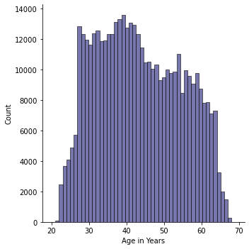

Seaborn Exercises
Imports
Run the cell below to import the libraries
import numpy as np
import pandas as pd
import seaborn as sns
import matplotlib.pyplot as pltThe Data
DATA SOURCE: https://www.kaggle.com/rikdifos/credit-card-approval-prediction
Data Information:
Credit score cards are a common risk control method in the financial industry. It uses personal information and data submitted by credit card applicants to predict the probability of future defaults and credit card borrowings. The bank is able to decide whether to issue a credit card to the applicant. Credit scores can objectively quantify the magnitude of risk.
Feature Information:
| application_record.csv | ||
|---|---|---|
| Feature name | Explanation | Remarks |
ID
|
Client number | |
CODE_GENDER
|
Gender | |
FLAG_OWN_CAR
|
Is there a car | |
FLAG_OWN_REALTY
|
Is there a property | |
CNT_CHILDREN
|
Number of children | |
AMT_INCOME_TOTAL
|
Annual income | |
NAME_INCOME_TYPE
|
Income category | |
NAME_EDUCATION_TYPE
|
Education level | |
NAME_FAMILY_STATUS
|
Marital status | |
NAME_HOUSING_TYPE
|
Way of living | |
DAYS_BIRTH
|
Birthday | Count backwards from current day (0), -1 means yesterday |
DAYS_EMPLOYED
|
Start date of employment | Count backwards from current day(0). If positive, it means the person currently unemployed. |
FLAG_MOBIL
|
Is there a mobile phone | |
FLAG_WORK_PHONE
|
Is there a work phone | |
FLAG_PHONE
|
Is there a phone | |
FLAG_EMAIL
|
Is there an email | |
OCCUPATION_TYPE
|
Occupation | |
CNT_FAM_MEMBERS
|
Family size |
df = pd.read_csv('archive/application_record.csv')df.head()| ID | CODE_GENDER | FLAG_OWN_CAR | FLAG_OWN_REALTY | CNT_CHILDREN | AMT_INCOME_TOTAL | NAME_INCOME_TYPE | NAME_EDUCATION_TYPE | NAME_FAMILY_STATUS | NAME_HOUSING_TYPE | DAYS_BIRTH | DAYS_EMPLOYED | FLAG_MOBIL | FLAG_WORK_PHONE | FLAG_PHONE | FLAG_EMAIL | OCCUPATION_TYPE | CNT_FAM_MEMBERS | |
|---|---|---|---|---|---|---|---|---|---|---|---|---|---|---|---|---|---|---|
| 0 | 5008804 | M | Y | Y | 0 | 427500.0 | Working | Higher education | Civil marriage | Rented apartment | -12005 | -4542 | 1 | 1 | 0 | 0 | NaN | 2.0 |
| 1 | 5008805 | M | Y | Y | 0 | 427500.0 | Working | Higher education | Civil marriage | Rented apartment | -12005 | -4542 | 1 | 1 | 0 | 0 | NaN | 2.0 |
| 2 | 5008806 | M | Y | Y | 0 | 112500.0 | Working | Secondary / secondary special | Married | House / apartment | -21474 | -1134 | 1 | 0 | 0 | 0 | Security staff | 2.0 |
| 3 | 5008808 | F | N | Y | 0 | 270000.0 | Commercial associate | Secondary / secondary special | Single / not married | House / apartment | -19110 | -3051 | 1 | 0 | 1 | 1 | Sales staff | 1.0 |
| 4 | 5008809 | F | N | Y | 0 | 270000.0 | Commercial associate | Secondary / secondary special | Single / not married | House / apartment | -19110 | -3051 | 1 | 0 | 1 | 1 | Sales staff | 1.0 |
df.info()<class 'pandas.core.frame.DataFrame'>
RangeIndex: 438557 entries, 0 to 438556
Data columns (total 18 columns):
# Column Non-Null Count Dtype
--- ------ -------------- -----
0 ID 438557 non-null int64
1 CODE_GENDER 438557 non-null object
2 FLAG_OWN_CAR 438557 non-null object
3 FLAG_OWN_REALTY 438557 non-null object
4 CNT_CHILDREN 438557 non-null int64
5 AMT_INCOME_TOTAL 438557 non-null float64
6 NAME_INCOME_TYPE 438557 non-null object
7 NAME_EDUCATION_TYPE 438557 non-null object
8 NAME_FAMILY_STATUS 438557 non-null object
9 NAME_HOUSING_TYPE 438557 non-null object
10 DAYS_BIRTH 438557 non-null int64
11 DAYS_EMPLOYED 438557 non-null int64
12 FLAG_MOBIL 438557 non-null int64
13 FLAG_WORK_PHONE 438557 non-null int64
14 FLAG_PHONE 438557 non-null int64
15 FLAG_EMAIL 438557 non-null int64
16 OCCUPATION_TYPE 304354 non-null object
17 CNT_FAM_MEMBERS 438557 non-null float64
dtypes: float64(2), int64(8), object(8)
memory usage: 60.2+ MBTASKS
Recreate the plots shown in the markdown image cells. Each plot also contains a brief description of what it is trying to convey. Note, these are meant to be quite challenging. Start by first replicating the most basic form of the plot, then attempt to adjust its styling and parameters to match the given image.
In general do not worry about coloring,styling, or sizing matching up exactly. Instead focus on the content of the plot itself. Our goal is not to test you on recognizing figsize=(10,8) , its to test your understanding of being able to see a requested plot, and reproducing it.
NOTE: You may need to perform extra calculations on the pandas dataframe before calling seaborn to create the plot.
—-
TASK: Recreate the Scatter Plot shown below
The scatterplot attempts to show the relationship between the days employed versus the age of the person (DAYS_BIRTH) for people who were not unemployed. Note, to reproduce this chart you must remove unemployed people from the dataset first. Also note the sign of the axis, they are both transformed to be positive. Finally, feel free to adjust the alpha and linewidth parameters in the scatterplot since there are so many points stacked on top of each other.

# CODE HERE TO RECREATE THE PLOT SHOWN ABOVE
df_just_employed = df.loc[df['DAYS_EMPLOYED'] < 0]
df_res = df_just_employed.loc[:,['DAYS_EMPLOYED','DAYS_BIRTH']].abs()
plt.figure(figsize=(10,4), dpi=100)
sns.scatterplot(x='DAYS_BIRTH',y='DAYS_EMPLOYED', data=df_res)<AxesSubplot:xlabel='DAYS_BIRTH', ylabel='DAYS_EMPLOYED'>
| ### TASK: Recreate the Distribution Plot shown below: |
 |
| Note, you will need to figure out how to calculate “Age in Years” from one of the columns in the DF. Think carefully about this. Don’t worry too much if you are unable to replicate the styling exactly. |
| ```python # CODE HERE TO RECREATE THE PLOT SHOWN ABOVE df_year = abs(df.loc[:,‘DAYS_BIRTH’]) // 365 |
| sns.displot(x=df_year, bins=50,color=‘#4A4A93’) plt.xlabel(‘Age in Years’) ``` |
| Text(0.5, 6.79999999999999, ‘Age in Years’) |
 |
| # |
| ```python |
| ``` |
TASK: Recreate the Categorical Plot shown below:

This plot shows information only for the bottom half of income earners in the data set. It shows the boxplots for each category of NAME_FAMILY_STATUS column for displaying their distribution of their total income. Note: You will need to adjust or only take part of the dataframe before recreating this plot. You may want to explore the order parameter to get the xticks in the exact order shown here
# CODE HERE
plt.figure(figsize=(10,4))
df_income = df.loc[df['AMT_INCOME_TOTAL'] < df['AMT_INCOME_TOTAL'].median()]
sns.boxplot(x='NAME_FAMILY_STATUS',y='AMT_INCOME_TOTAL', data=df_income, hue='FLAG_OWN_REALTY', palette='Set2')
plt.legend(loc=(1.03,0.5), title='FLAG_OWN_REALTY')<matplotlib.legend.Legend at 0x1b5d33efc10>png
TASK: Recreate the Heat Map shown below:

This heatmap shows the correlation between the columns in the dataframe. You can get correlation with .corr() , also note that the FLAG_MOBIL column has NaN correlation with every other column, so you should drop it before calling .corr().
# CODE HERE
df_corr = df.drop('FLAG_MOBIL', axis=1)
sns.heatmap(df_corr.corr(),)<AxesSubplot:>png
<AxesSubplot:>png